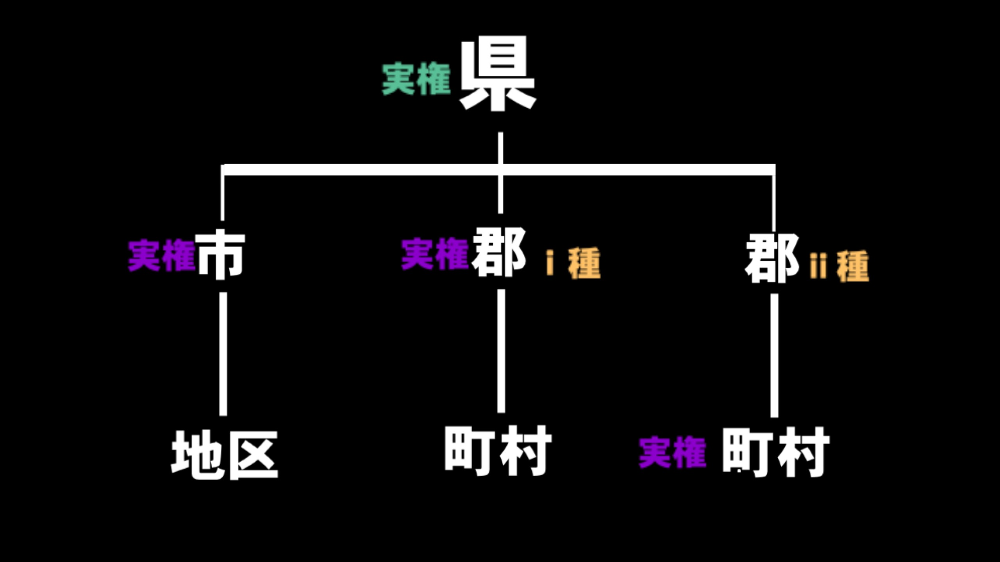

国名は未定である
これはこの国家が世界に存在する唯一の国家であり、他と区別する必要性がないという考え方に基づいている。
(航空便などで往来できる違う国家はそもそもこの世界ではない別の世界にあると解釈されている。)
国家の業務は国鉄線など複数県にまたがるものや空港などの運営にとどまり、公共業務のほとんどは県単位で行われている。
概要図

上位自治体
県
自治権を持った上位自治体である。
新設されるのは、地理的、その他要因で他からはなれた下位自治体が出現した場合である。
砂砦県と西隈県は海底トンネルを挟んで隔てられてる。
下位自治体
市
域内人口1000人以上(砂砦市の人口が1000人を超えるまでは500人以上という条件であった)
また2022.8/30現在、砂砦市以外の市は存在していない。
郡
域内人口1000人以下
役所は市郡単位でおかれることが多い。
行政区画
地区
市の下に置かれる行政区画。実権は持たないことが多い
町
郡の下に置かれる行政区画で実権は持たないことが多い。域内人口100人以上
村
郡の下に置かれる行政区画で実権は持たないことが多い。域内人口100人以下
※市と町村は対等な自治体ではないので人口ランキングなどでは、地区町村で比べられる。